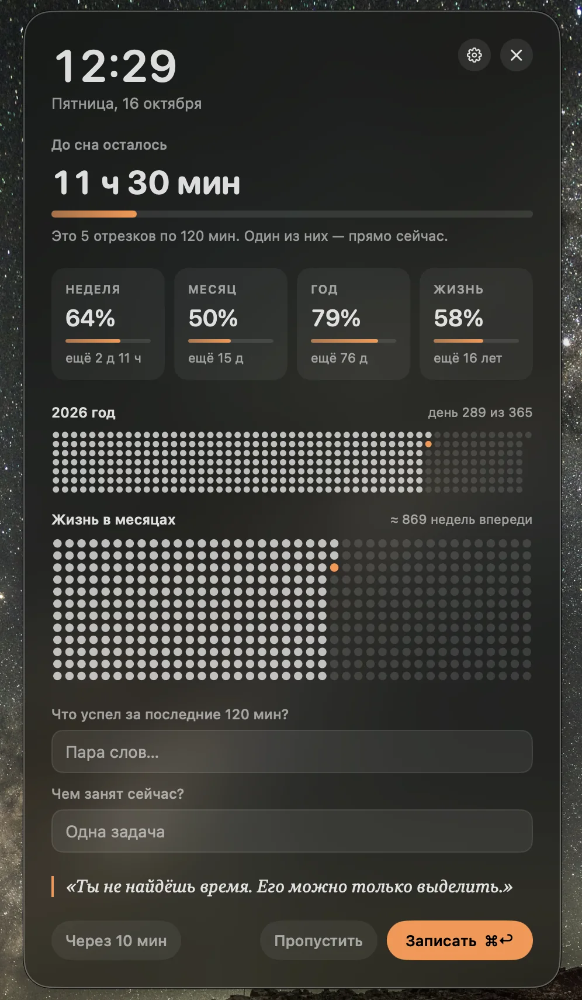
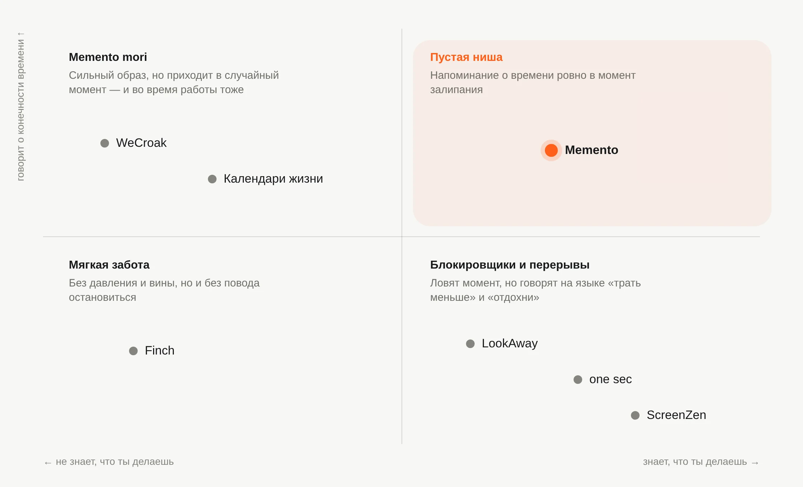
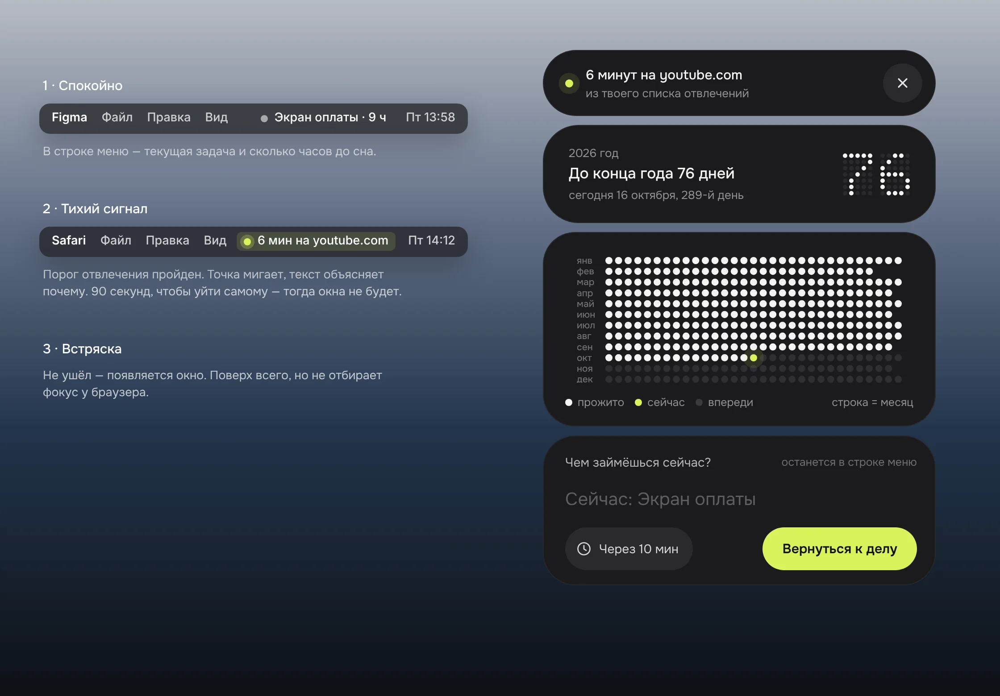
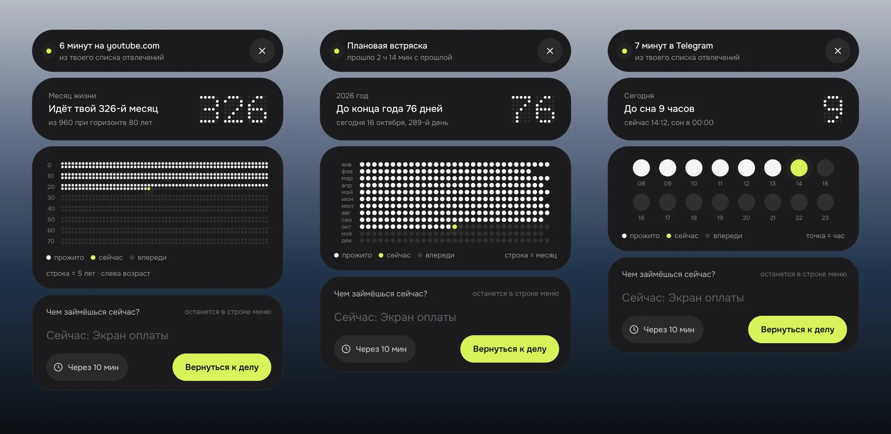
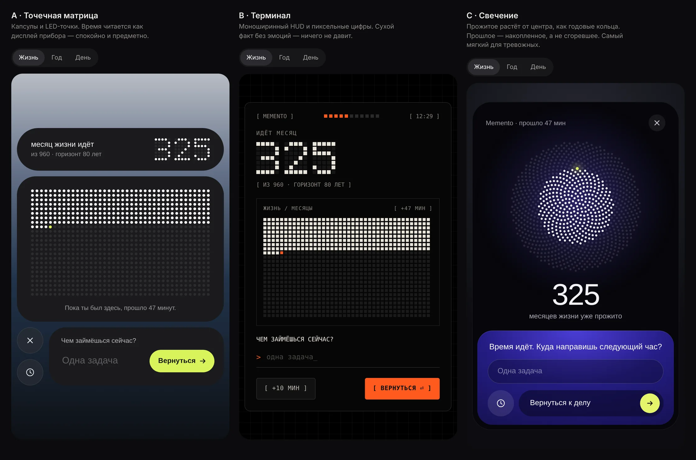
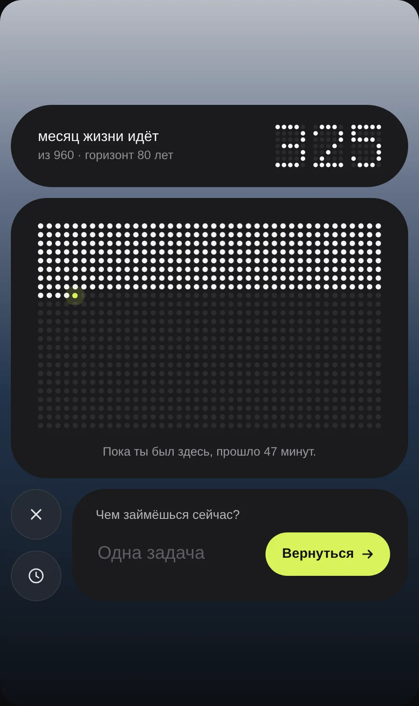
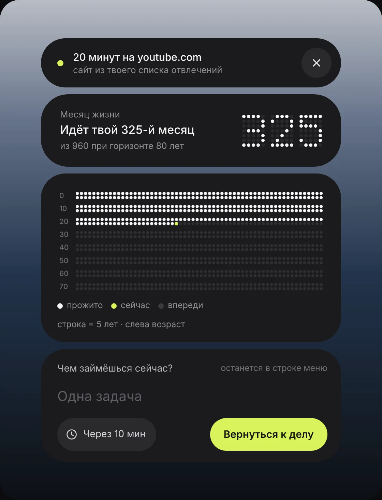
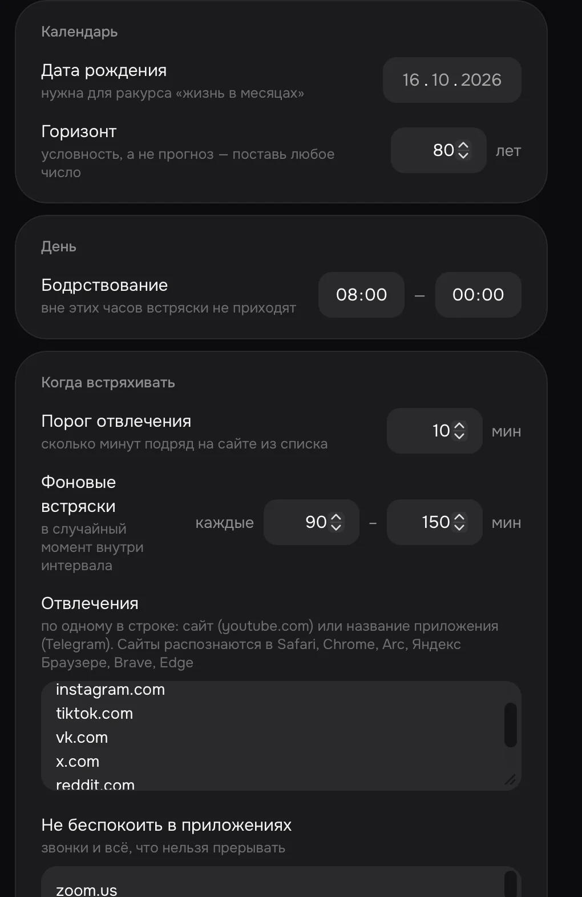
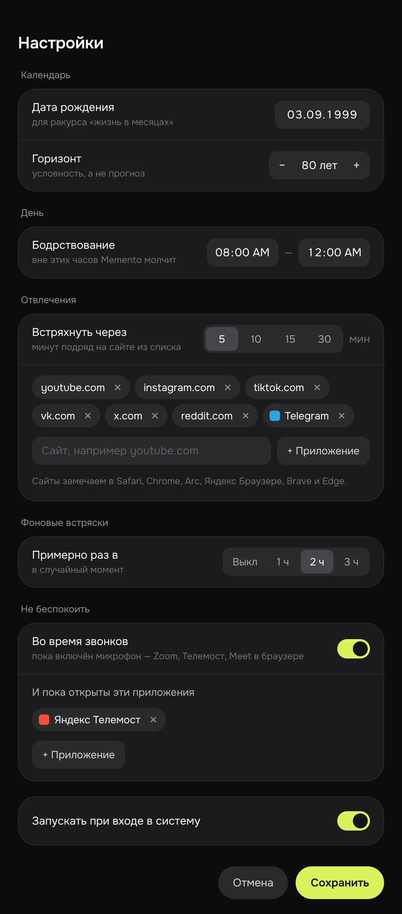

С чего всё началось
У меня была самописная утилита в строке меню. Раз в час-два она открывала окно: часы, сколько осталось до сна, прогресс недели, месяца, года и жизни, две сетки точек, два поля для записей и цитата.
Идея была простая: сидишь, листаешь рилсы, тут всплывает сетка прожитых месяцев — и ты возвращаешься к работе. Чувство «жизнь-то тикает» должно было срабатывать как встряска.
Я решил пересобрать её с нуля и посмотреть на неё как на продукт, а не как на набор виджетов.

Что было не так
Когда разобрал окно по частям, оказалось, что в нём живут три разных продукта: напоминание о конечности времени, журнал «что успел — чем занят» и мотивационная цитата. У каждого своя частота и свой эмоциональный вес, а показывались они все вместе.
Главная проблема — вес контента не совпадал с частотой показа. Сетка жизни работает, когда видишь её редко. Если она всплывает каждый час, через неделю-две глаз перестаёт её замечать. Самое сильное средство обесценивалось быстрее всего.
Сначала я потянул продукт в сторону журнала: связать два поля в цикл «план → факт» и сделать итог дня. Получалось аккуратно, но это был уже другой продукт — трекер времени, каких много. Исходная идея была не в учёте, а во встряске. Её я и оставил, а всё остальное убрал.
Одна проблема и три ограничения
Задачу сформулировал так: как напоминать о конечности времени, чтобы на сотом показе это работало так же, как на первом. И сразу упёрся в три ограничения, которые тянут в разные стороны.
- Не наказывать хорошее поведение. Таймер не знает, залип я или работаю. Если окно прерывает поток, я учусь закрывать его не глядя — и пропускаю его и в момент залипания.
- Не приедаться. Одна и та же картинка через одну-две недели становится фоном и перестаёт вызывать реакцию.
- Без стыда. «Ты опять залип» — это укор. Он усиливает тревогу, и от такого приложения отписываются. Особенно люди, у которых тревожность и так высокая.
Чем сильнее встряска, тем выше риск стыда. Чем реже показ, тем проще пропустить залипание. Ослаблять удар я не хотел — значит, нужно было точнее выбирать момент и форму.
Кто уже решал похожие задачи
Прямого аналога не нашёл, но у каждой соседней категории есть решение для одного из ограничений.
- one sec перехватывает открытие соцсетей дыхательной паузой. В исследовании с Институтом Макса Планка использование соцсетей снизилось на 57%. Но обозреватели пишут, что через несколько недель пауза превращается в ещё одну кнопку, которую проходят на автопилоте. То есть привыкание — проблема всей категории, а не только моя.
- У one sec же есть счётчик попыток за сутки. Обозреватели называют его самым действенным — и самым стыдящим. Отсюда задача: сохранить силу факта, но убрать оценку.
- ScreenZen увеличивает задержку с каждым открытием — эскалация вместо одинакового экрана.
- WeCroak пять раз в день в случайное время напоминает о смерти, но только с 7 до 22. Случайность — против привыкания, часы тишины — уважение к границам.
- Приложений «жизнь в неделях» десятки, и они почти одинаковые: сама сетка — уже товар. Выделиться можно только тем, когда и как она показывается. В Finite Grid подсмотрел мысль, что прожитые недели могут быть наполненными, а не «сгоревшими».
- LookAway — напоминания о перерывах на Mac — сам ставит паузу во время звонков, записи экрана и видео. Автор пишет, что прерывание без учёта контекста ощущается как диктатор, а приложение, которое не различает контекст, превращается в фоновый шум.
- Finch не наказывает за пропущенные дни. Для людей с тревожностью это важно: вина и так звучит у них во внутреннем монологе.

Решения
Срабатывать на залипание, а не по часам
Главный триггер — отвлечение. Я сам задаю список сайтов и приложений. Если одно из них дольше порога на экране, приходит встряска. Чтобы поймать залипание вне списка, иногда встряска приходит и просто так — в случайный момент, примерно раз в два часа.
Memento молчит вне часов бодрствования, когда экран заблокирован и во время звонков. Звонок определяется по включённому микрофону, поэтому ловится любой созвон — Zoom, Телемост, Meet в браузере — без списков.
Сначала шёпот, потом окно
Окно не прыгает сразу. Сначала в строке меню начинает мигать точка, а рядом появляется причина: «6 мин на youtube.com». У меня есть полторы минуты, чтобы уйти самому, — и тогда окна не будет.
Это и есть «не наказывать хорошее поведение»: самостоятельное возвращение засчитывается, а не перебивается. В журнале оно пишется отдельным событием — это главная метрика, на которую я буду смотреть.

Против привыкания: другой ракурс и видимое изменение
Статичная сетка «58% жизни» каждый раз одинаковая. Поэтому ракурс меняется от показа к показу: жизнь в месяцах, год в днях, сегодняшние часы до сна. Одна и та же мысль в разных единицах.
При каждом открытии прожитые точки заполняются заново за секунду, а текущая начинает пульсировать. Так видно, что время идёт, а не стоит на картинке.
И самое важное против привыкания — редкость. Встряска приходит тогда, когда она уместна, а не по расписанию. Чем меньше лишних показов, тем дольше она остаётся заметной.

Факт без оценки
Тексты пишутся как факт: «6 минут на youtube.com», «до конца года 76 дней». Никаких «опять», стриков и счётчиков провалов.
Горизонт жизни задаёт сам человек, и в настройках прямо написано: это условность, а не прогноз. Старая версия показывала «58%, ещё 16 лет» — это читалось как мрачное предсказание.
Эмоция сразу превращается в действие
Встряска без следующего шага оставляет только неприятное чувство. Поэтому у окна одно поле — «Чем займёшься сейчас?» — и главная кнопка «Вернуться к делу». Задача остаётся в строке меню и держит фокус до следующего раза.
Визуал
Сделал три направления для одного и того же экрана: точечная матрица в духе табло, терминал с моноширинным шрифтом и мягкое свечение, где прожитое растёт от центра, как годовые кольца.
Выбрал матрицу. Она предметная и спокойная: время читается как показание прибора, а не как драма. Терминал оказался слишком сухим, свечение — слишком декоративным для окна, которое должно считываться за пару секунд.

Первая версия матрицы понравилась визуально, но с продуктовой стороны была непонятной: что это за точки, что идёт, в каких единицах. Я переложил окно в четыре капсулы, и каждая отвечает на один вопрос, который человек задаёт себе за пару секунд:
- Почему это всплыло? — причина показа и крестик.
- Что за число? — число и его смысл словами.
- Что значат точки? — подписи возраста, легенда «прожито / сейчас / впереди» и масштаб. Сетку жизни сгруппировал по десятилетиям: строка — пять лет, две строки — десятилетие.
- Что делать дальше? — поле задачи и две кнопки. «Через 10 минут» перенёс к главной кнопке, вместо того чтобы прятать его в иконку.


Что сломалось, когда я начал им пользоваться
Я собрал приложение на Swift и поставил себе. Первые же проверки показали то, чего не видно на макетах.
Видео сбрасывало счётчик
Я сидел на YouTube, точка мигала, но окно не появлялось. Причина: через три минуты без мыши и клавиатуры Memento решал, что я отошёл от компьютера, и обнулял счётчик. Но когда смотришь видео, ты как раз ничего не трогаешь. Продукт ломался ровно в главном сценарии.
Я переопределил, что значит «отошёл». Теперь это заблокированный экран или бездействие, когда на экране нет ничего из списка. Если открыт YouTube, отсутствие действий — это и есть залипание, а не уход.
Мигание было непонятным
Точка начала мигать, и я не понял, что это значит и чего от меня хотят. Теперь во время сигнала в строке меню вместо задачи написана причина, а в меню видно, сколько уже набежало: «На youtube.com: 3 из 5 мин».
Приходилось угадывать названия приложений
В первых настройках приложения для «не беспокоить» вписывались текстом. Чтобы это сработало, нужно знать, как именно приложение называется в системе. А созвоны в браузере так не ловились вообще. Список заменил переключателем «во время звонков» по микрофону и выбором из открытых приложений с иконками. Голые числа заменил короткими вариантами: порог 5, 10, 15 или 30 минут, фоновые встряски раз в час, два или три.


Получилось ли
Честно: две задачи из трёх решены самой механикой, третья пока остаётся гипотезой.
- Не наказывать хорошее поведение — да. Встряска срабатывает на отвлечение, молчит во время звонков и сна, а самостоятельное возвращение засчитывается до того, как появится окно.
- Без стыда — в основном да. Тон фактический, стриков нет, горизонт задаёт сам человек. Но сетка жизни всё равно тяжёлый образ. Для тех, кому он не подходит, стоит дать возможность её отключить и оставить только год и день.
- Не приедаться — не доказано. Встряска стала редкой и уместной, и это главное, что работает против привыкания. Но ракурсов всего три, и они идут по кругу: жизнь, год, день, снова жизнь. Через неделю-две я буду заранее знать, что увижу, — и окно рискует снова стать фоном. Анимация заполнения тоже каждый раз одна и та же. Так ли это на самом деле, покажет только время.
Поэтому в приложение встроен локальный журнал: каждый показ, реакция и время до ответа. Через 2–4 недели я смогу ответить на вопрос цифрами: держится ли доля возвратов к четвёртой неделе, как часто я ухожу сам на тихом сигнале и сколько окон закрываю не глядя, быстрее чем за две секунды.
Если эффект просядет, следующие шаги уже понятны: больше ракурсов, личные вехи на сетке вместо безликих точек, и спокойная обратная связь вроде «на этой неделе ты возвращался сам восемь раз» — в позитивном ключе, а не как счётчик провалов.
Как поставить себе
Memento собирается прямо на вашем Mac из исходников: так не нужна подпись разработчика Apple, и macOS не будет ругаться на «неизвестное приложение». Нужен macOS 13 или новее.
- Скачайте архив memento-mac.zip — он сохранится в «Загрузки».
- Откройте «Терминал» и выполните одну команду:
Скрипт соберёт приложение, положит его в «Программы» и запустит. Если браузер переименовал архив, например в «memento-mac (1).zip», поправьте имя в команде.cd ~/Downloads && unzip -oq memento-mac.zip && bash memento-mac/build.sh - Если macOS предложит установить инструменты разработчика — согласитесь, дождитесь установки и выполните команду ещё раз.
- При первом запуске откроются настройки: дата рождения, часы бодрствования и список отвлечений. Сайты добавляются чипами, приложения — из списка открытых.
- Когда Memento спросит разрешение управлять браузером, разрешите: так он видит, какой сайт открыт в активной вкладке. Адреса никуда не отправляются. Сайты распознаются в Safari, Chrome, Arc, Яндекс Браузере, Brave и Edge.
Всё хранится только на вашем Mac. Чтобы удалить, выйдите из Memento через значок в строке меню и удалите приложение из «Программ».